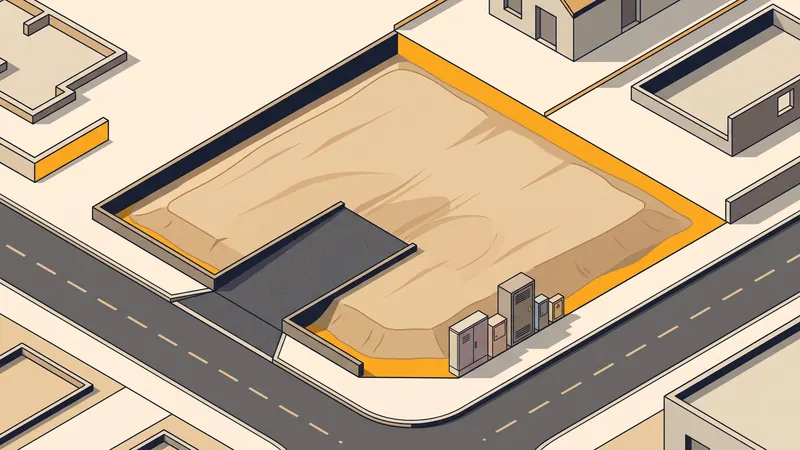

Viabilisation Terrain Constructible : Étapes & Coûts 2026
La viabilisation d'un terrain consiste à raccorder une parcelle aux différents réseaux publics : eau potable, électricité, assainissement, télécommunications et parfois gaz. C'est une étape indispensable avant toute construction. À Aix-en-Provence et dans les Bouches-du-Rhône, les coûts de viabilisation varient considérablement selon l'éloignement des réseaux. Ce guide détaille chaque étape et ses coûts.

Qu'est-ce que la viabilisation d'un terrain ?
Viabiliser un terrain, c'est le rendre apte à recevoir une construction en le connectant aux infrastructures publiques. Un terrain non viabilisé (dit "terrain isolé" ou "terrain diffus") nécessite des travaux de raccordement qui peuvent représenter un budget significatif. Il est essentiel d'évaluer ces coûts avant l'achat du terrain.
La viabilisation comprend deux parties distinctes :
- La partie publique : le raccordement du réseau principal (sous la voirie) jusqu'à la limite de propriété. Cette partie est réalisée par le concessionnaire (Enedis, gestionnaire d'eau, etc.).
- La partie privée : les tranchées et canalisations depuis la limite de propriété jusqu'à la future construction. Cette partie est réalisée par un terrassier VRD.

Les réseaux à raccorder
1. Raccordement au réseau d'eau potable
La demande de raccordement se fait auprès du gestionnaire de réseau d'eau de votre commune. Dans la Métropole Aix-Marseille-Provence, c'est la SEM (Société des Eaux de Marseille) ou la SAUR selon les secteurs. Le gestionnaire pose un compteur en limite de propriété dans un coffret accessible depuis la voie publique.
Coût : 1 500 à 3 000 euros (branchement + compteur). Le prix dépend de la distance entre le réseau et la limite de propriété, du diamètre du branchement et de la nature du sol sous la voirie (enrobé, trottoir).
2. Raccordement au réseau électrique
La demande se fait auprès d'Enedis (ex-ERDF). Enedis réalise une étude technique et vous adresse un devis. Le raccordement comprend l'extension du réseau si nécessaire, le branchement jusqu'à votre coffret en limite de propriété et la mise en place du compteur Linky.
Coût : 1 000 à 10 000 euros selon la distance et la puissance demandée. Un raccordement en lotissement coûte environ 1 000-2 000 euros. Un raccordement en terrain isolé nécessitant une extension de réseau peut dépasser 10 000 euros. Les délais Enedis sont de 2 à 6 mois.
3. Raccordement au réseau d'assainissement
Si votre terrain est en zone d'assainissement collectif, le raccordement au tout-à-l'égout est obligatoire. La demande se fait auprès de la Métropole ou du service assainissement de la commune. Vous devrez payer la PRE (Participation au Raccordement à l'Égout).
Si votre terrain est en zone d'assainissement non collectif, vous devrez installer une fosse toutes eaux ou une micro-station d'épuration.
Coût : 3 000 à 10 000 euros (raccordement collectif) ou 5 000 à 15 000 euros (assainissement autonome).
4. Raccordement aux télécommunications et fibre
La demande se fait auprès d'Orange (réseau cuivre) ou de l'opérateur fibre de votre zone. Le raccordement télécom est généralement le moins coûteux des raccordements.
Coût : 200 à 1 000 euros.
5. Raccordement au gaz (optionnel)
Le raccordement au gaz naturel est optionnel et de plus en plus rare dans les constructions neuves (RE2020). La demande se fait auprès de GRDF. Le coût varie de 400 à 1 500 euros selon la distance.
Tableau récapitulatif des coûts de viabilisation
| Réseau | Coût en lotissement | Coût terrain isolé | Délai moyen |
|---|---|---|---|
| Eau potable | 1 500 - 2 000 € | 2 000 - 3 000 € | 1-2 mois |
| Électricité | 1 000 - 2 000 € | 3 000 - 10 000 € | 2-6 mois |
| Assainissement | 3 000 - 5 000 € | 5 000 - 10 000 € | 1-3 mois |
| Télécom / Fibre | 200 - 500 € | 500 - 1 000 € | 1-2 mois |
| Total | 5 700 - 9 500 € | 10 500 - 24 000 € | 3-6 mois |
Prix indicatifs TTC dans les Bouches-du-Rhône en 2026. Le coût des tranchées privées (15-30 €/ml) s'ajoute à ces montants.
Les étapes de la viabilisation
Étape 1 : Vérifications préalables
Avant d'acheter un terrain, demandez un certificat d'urbanisme opérationnel (CUb) en mairie. Ce document indique si le terrain est constructible et recense les réseaux disponibles à proximité. Il précise les conditions de desserte et les participations financières à prévoir.
Étape 2 : Demandes de raccordement
Lancez les demandes de raccordement auprès de chaque concessionnaire dès l'obtention du permis de construire. Chaque organisme vous adressera un devis que vous devrez accepter et payer pour déclencher les travaux. Anticipez les délais d'Enedis qui sont les plus longs.
Étape 3 : Travaux de tranchées (partie privée)
C'est là qu'intervient le terrassier VRD. Les tranchées sont creusées sur votre terrain pour recevoir les différentes canalisations. L'idéal est de réaliser une tranchée commune regroupant plusieurs réseaux (eau, électricité, télécom) pour réduire les coûts. Des distances de sécurité entre les réseaux doivent être respectées (20 cm minimum entre eau et électricité).
La profondeur des tranchées varie : 80 cm pour l'eau potable (hors gel), 60 cm pour l'électricité, 80 cm minimum pour l'assainissement (pente de 2-3 % obligatoire). Un grillage avertisseur de couleur normalisée (bleu pour l'eau, rouge pour l'électricité, vert pour le télécom) est posé 30 cm au-dessus de chaque réseau.
Étape 4 : Raccordement et mise en service
Les concessionnaires réalisent le raccordement entre le réseau public et votre coffret en limite de propriété. La mise en service intervient après vérification de la conformité des installations intérieures (consuel pour l'électricité, contrôle SPANC pour l'assainissement).
Le rôle du terrassier VRD dans la viabilisation
Chez STP Terrassement, nous prenons en charge l'intégralité des travaux de viabilisation sur la partie privée de votre terrain à Aix-en-Provence et dans les Bouches-du-Rhône :
- Creusement des tranchées (mini-pelle ou trancheuse)
- Pose des fourreaux et canalisations
- Pose des grillages avertisseurs
- Remblaiement et compactage
- Réalisation des regards de visite
- Raccordement au réseau d'assainissement
- Coordination avec les concessionnaires
Terrain à viabiliser ?
STP Terrassement réalise vos travaux de viabilisation et de VRD. Devis gratuit et détaillé sous 24h.